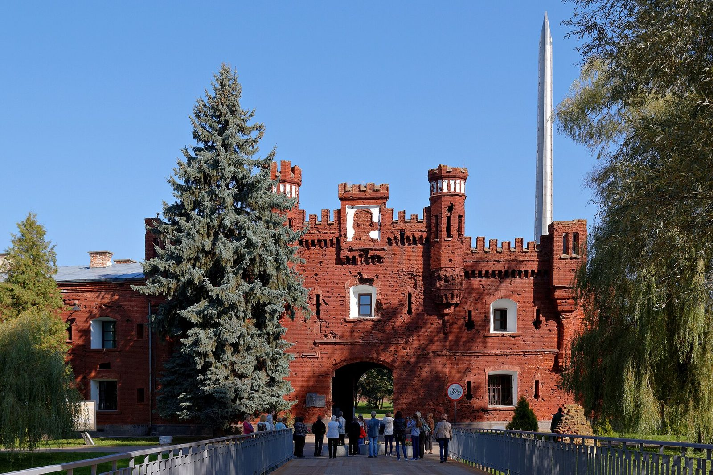
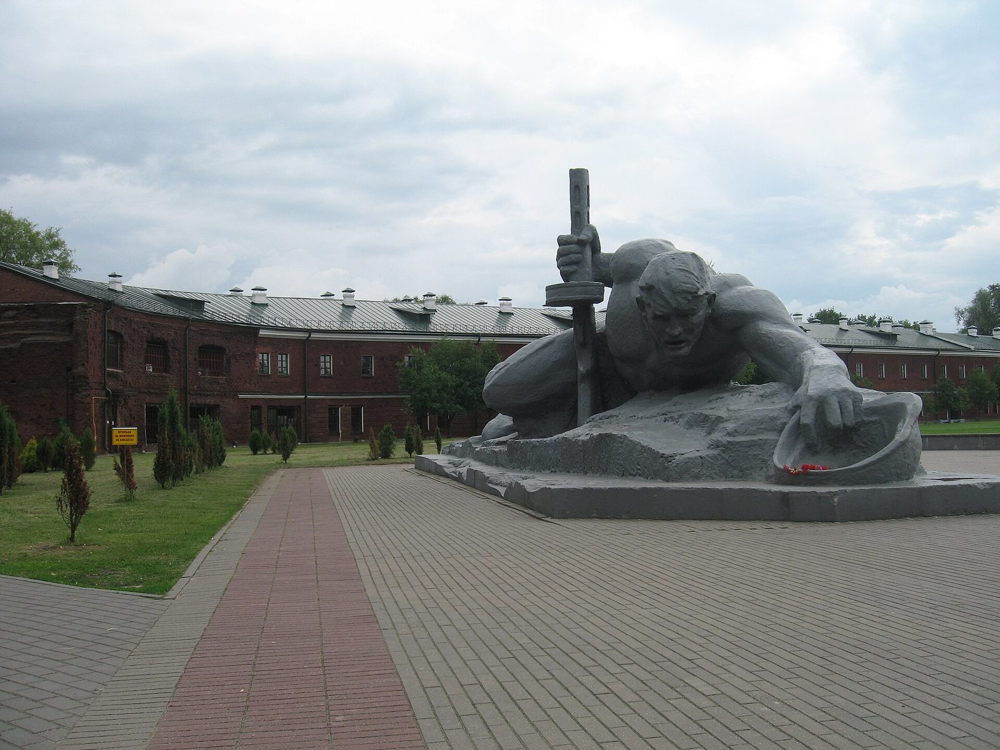
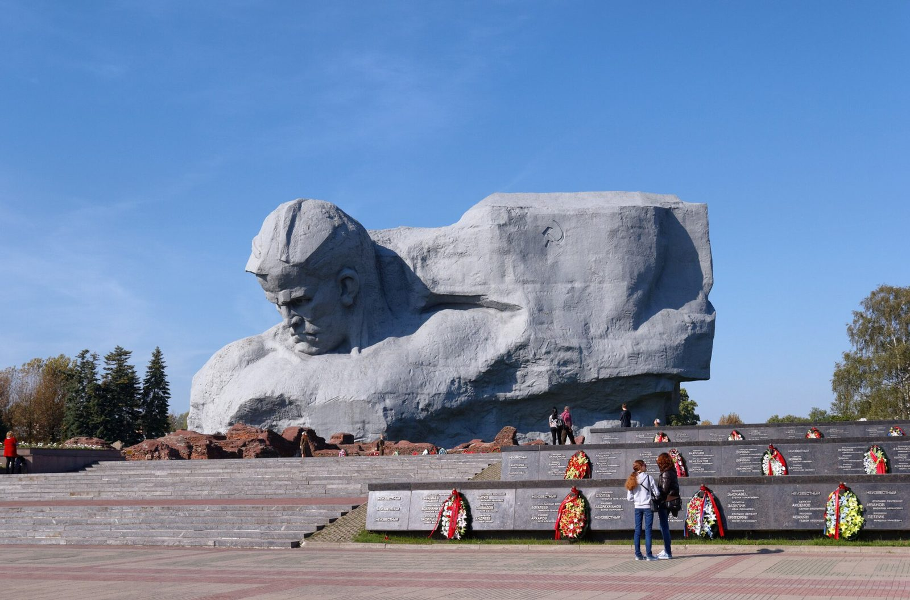

Первый цифровой музей достижений России · Цивилизация первенств — что Россия дала миру раньше всех
Русские не сдаются
И один в поле воин, если он по-русски скроен



Холмские ворота цитадели — мемориал «Брестская крепость-герой»В первый час войны гарнизон остался без связи и командования — и всё равно принял бой.
Скульптура «Жажда» — мемориал «Брестская крепость-герой»Воды в крепости не было: река простреливалась. Люди держались без глотка воды, под огнём.
Монумент «Мужество» — мемориал «Брестская крепость-герой»Через тридцать лет после боя страна поставила крепости памятник — чтобы помнили, как она не сдалась.
крепость · 1941 · река Мухавец
Гарнизон Брестской крепости · майор Пётр Гаврилов
Брестская крепость
«Умираю, но не сдаюсь» — надпись на кирпиче, а не в приказе.
◆ Выбор
22 июня 1941, около четырёх утра. Один из первых ударов войны — по крепости. Гарнизон без связи и командования, в полном окружении — и всё равно не поднял белый флаг.
◆ Стойкость
Без воды, без хлеба, без патронов. Отдельные очаги держались неделями — дольше, чем велел любой расчёт.
◆ Память
Надписи на стенах — их последние слова — сохранились до наших дней. Крепость не сдалась, и это помнят до сих пор.
7 тыс.
воинов и семей в крепости к началу войны
3,5 тыс.
осталось обороняться после первого дня
16 тыс.
наступавшая 45-я пехотная дивизия
32
дня — до 23 июля, когда взят в плен майор Гаврилов
Числа — по данным мемориального комплекса «Брестская крепость-герой» и научным публикациям; оценки числа защитников в источниках разнятся.
Среда подвига
Крепость на границе, которая стала островом
22 июня 1941 года, около четырёх утра. Крепость у слияния Мухавца и Западного Буга принимает удар в первый час войны. Следи по карте: где ударил враг — и где крепость держалась дольше всего.
Первый удар — и очаги, что не смолкли
Нажми на точку — увидишь, что там произошло.
Цифра-парадокс
В это трудно поверить
Факт 1Первый час войны
Война только началась — и первым ударом приняла крепость. Артподготовка шла с 03:15 до 04:15, а через час враг уже был у стен. Гарнизон даже не успел занять оборону по плану — и всё равно встал насмерть.
Факт 2Почти впятеро меньше
После потерь первого дня оборонялось около 3,5 тысячи человек. Против — 45-я пехотная дивизия с приданными частями, около 16 тысяч. Почти впятеро больше, а крепость держалась неделями.
Факт 3Без глотка воды
Воды в крепости не было: река простреливалась, водопровод разбит. Люди держались под огнём и под жаждой — об этом скульптура «Жажда» в мемориале.
Факт 432 дня
Организованная оборона шла до конца июня, но отдельные очаги жили и в июле. Майора Гаврилова взяли в плен 23 июля — на 32-й день войны. На кирпиче осталась надпись «20/VII–41» — дата по тексту самой надписи, а не доказанная.
Подвиг
Бой, который крепость приняла в первый час
22 июня 1941 года, около четырёх утра. Крепость на западной границе, у слияния Мухавца и Западного Буга, принимает один из первых ударов войны. Артиллерия и авиация бьют по казармам, складам, домам комсостава. За считанные часы гарнизон теряет связь с командованием, а склады боеприпасов и продовольствия уничтожены.
Положение то, в котором части сдаются: окружение, отсутствие единого командования, ни воды, ни хлеба. Но защитники делают иначе — кто где успел, тот там и встаёт. Оборону держат разрозненные очаги: солдаты и командиры, оставшиеся без приказа и без надежды на помощь.
Скульптура «Жажда», мемориал «Брестская крепость-герой». Воды в крепости не было: река простреливалась, водопровод разбит. Люди держались под огнём и под жаждой.
Очагов много, и у каждого — своё имя. Майор Пётр Гаврилов руководит обороной Восточного форта и держится дольше всех — пленён лишь 23 июля, на 32-й день войны, тяжелораненым и истощённым. Комиссар Ефим Фомин, лейтенант Андрей Кижеватов, капитан Иван Зубачёв — они не выходили из боя, пока могли.
На стенах остались последние слова тех, кто не сдался, — выцарапанные штыком по кирпичу, когда вокруг уже всё говорило «конец». Суть одна, и она не зависит от числа павших: гарнизон, которому расчёт велел сдаться, предпочёл не сдаться. Не ради победы — победы не ждали. Ради того, чтобы остаться собой.
Цена — страшная: из тех, кто держал крепость, большинство погибли или попали в плен. В 1965 году крепость получила звание «крепость-герой», в 1971-м открыт мемориальный комплекс. Под гранитными плитами — останки 962–1038 погибших, имена известны лишь у 270–276 из них. Остальные — безымянные. Но их надписи на стенах — это их голоса.
Поговори
Спроси Брест
Задай вопрос — ответит собирательный голос защитников крепости. Ответы собраны из документов и материалов мемориального комплекса «Брестская крепость-герой».
Ответы сформированы на основе документальных источников.
Цена и память
Факт и миф — честно
Оборона Брестской крепости за десятилетия обросла версиями. Где документ, а где догадка — говорим прямо.
Развернуть — что известно, а что нет
Факт: крепость держалась
Крепость приняла первый удар 22 июня 1941 года и держалась неделями. Это подтверждают донесения 45-й пехотной дивизии вермахта, приказы и подлинные надписи на стенах. Спорна не сама оборона, а отдельные детали.
Кто написал «Умираю, но не сдаюсь»?
Автор точно не установлен. Называют Фёдора Рябова (132-й отдельный батальон конвойных войск НКВД) и курсанта Тимерена Зинатова — но тот, по уточнению, лишь процитировал эти слова в своей записке. Подаём как подлинную надпись с оговоркой «автор неизвестен».
Сколько было защитников?
В источниках разнятся оценки: около 7 тысяч воинов и членов семей в крепости к началу войны — и около 3,5 тысячи тех, кто оборонялся после потерь первого дня. Подаём диапазоном с маркером «по разным данным».
Дата «20/VII–41» — точно ли?
Надпись подлинна, но точность даты оспаривается. Подаём её как текст надписи, а не как доказанную дату обороны. Точно известно одно: и в июле крепость не смолчала.
Источники: мемориальный комплекс «Брестская крепость-герой» (brest-fortress.by) · Портал «История.РФ» (history.ru) · С. С. Смирнов «Брестская крепость» · местные и федеральные СМИ.
Контекст
Что делал мир в 1941 году
Тяни ленту вбок — увидишь, что происходило параллельно с подвигом.
1941
Операция «Барбаросса»
22 июня Германия нападает на СССР по фронту в тысячи километров — Брест лишь одна точка этого удара.
1941
США — нейтралитет
Америка ещё вне войны: в конгрессе спорят о помощи СССР. До Перл-Харбора — полгода.
1941
Северная Африка
В пустыне корпус Роммеля теснит британцев к Египту — война давно мировая.
1941
Смоленск, июль
Фронт ушёл далеко на восток, идут бои за Смоленск — а из Брестских руин ещё стреляют.
Твой выбор
А как поступил бы ты?
Утро 22 июня 1941 года. Ты — боец гарнизона. Связи нет, вода и хлеб кончаются, враг впятеро сильнее. Перед тобой три дороги — и каждая выглядела расчётом. Что ты сделаешь?
Поднимаю руки — сохранить жизнь, но сдать крепость. Война началась час назад: выйти с поднятыми руками значило остаться в живых. Но что это оставило бы от крепости и от присяги?
Пробиваюсь на восток — спастись, но оставить крепость без боя. Многие так и сделали и воевали дальше. Но бросить крепость значило отдать её без боя.
Остаюсь в руинах — биться без воды и связи, пока жив. Остаться значило биться в окружении, без единого командования, без воды. Держаться, когда сдаться было бы разумнее всего.
А они сделали так. Гарнизон предпочёл держаться: защитники остались в руинах и держались неделями — без воды, без связи, без надежды. Не потому, что были сильнее. Потому что решили не сдаться.
Проверь себя
Викторина
Календарь подвига
Выбери любой день месяца
Каждый подсвеченный день — человек или отряд, который не сдался. Нажми на число — увидишь имя и хук.